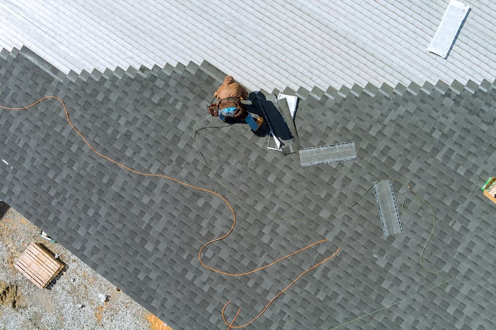

Full Roof Replacement
When a roof is past patching, we tear off the old, check the decking underneath, and lay a new system built to hold up to Texas heat and storms.
- Complete tear-off and haul away
- Decking checked before new material goes down
- Asphalt shingle systems